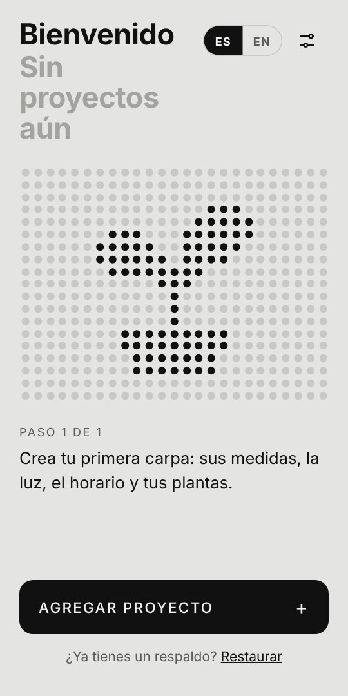
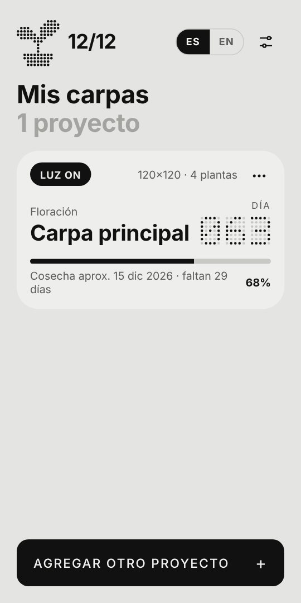
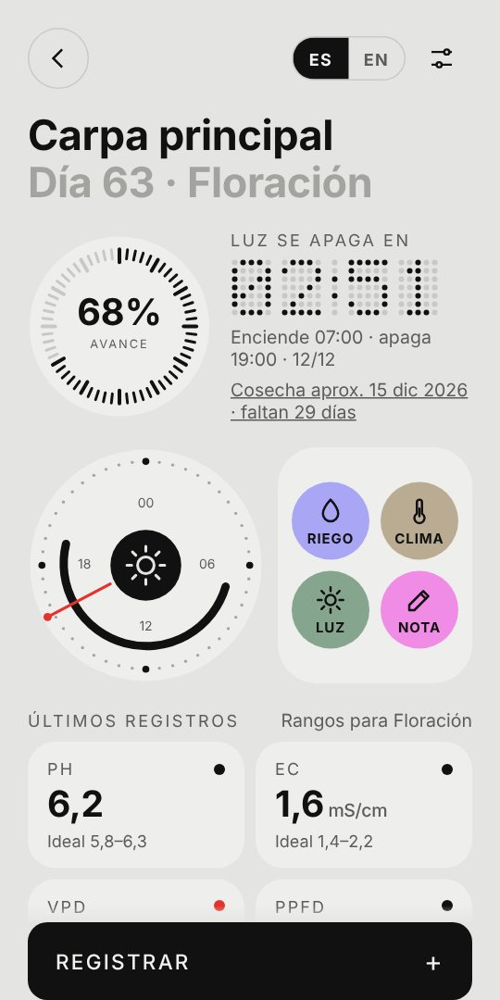
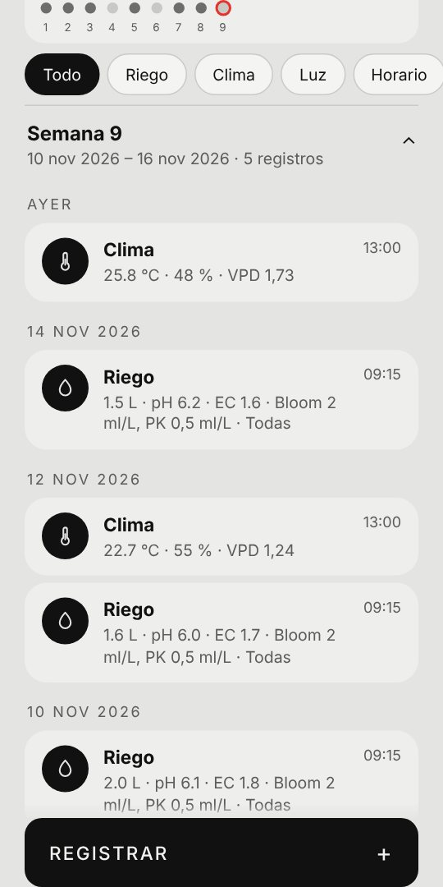
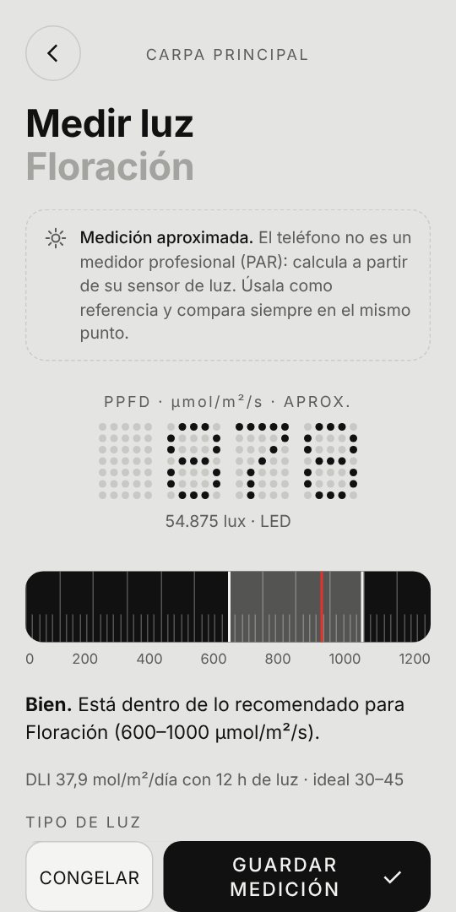
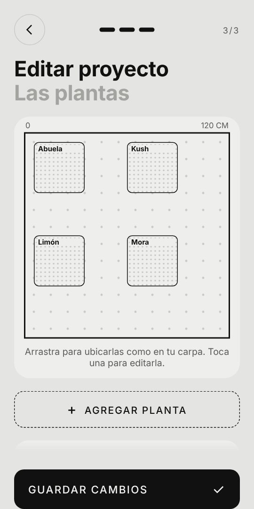
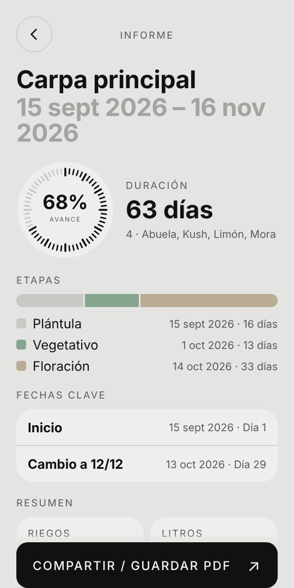
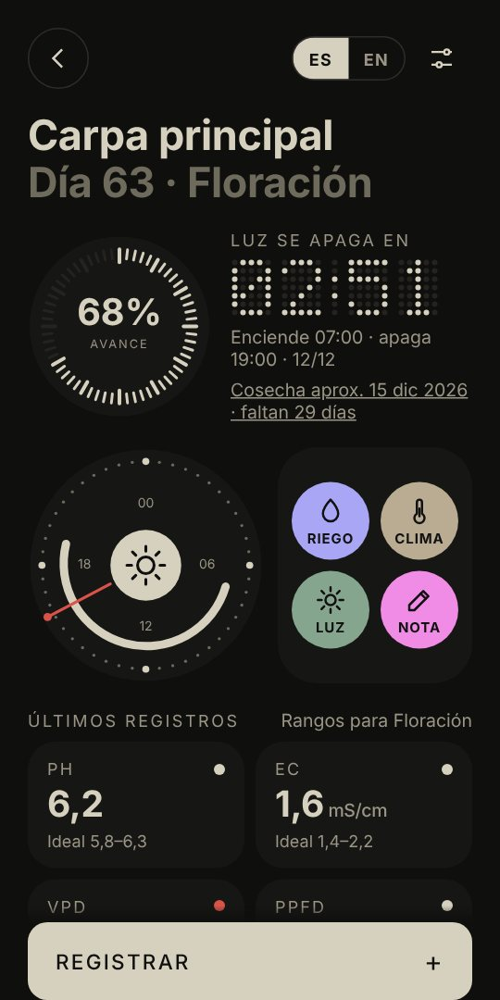

12/12
DIARIO DE CULTIVO PARA CARPAS INDOOR
Lleva tu cultivo de interior día a día. Arma tu carpa con sus medidas, luces y plantas, y anota riegos, pH, EC, clima, podas y fotos en una bitácora ordenada por semana.
La app calcula el avance del ciclo, te muestra cuánto falta para que se apague la luz, estima la cosecha y mide la luz con el sensor de tu teléfono. Al final te queda un informe con gráficos y fotos de todo el cultivo.
PRÓXIMAMENTE ENGoogle PlayAndroidPRÓXIMAMENTE ENApp StoreiPhone
PAGO ÚNICOSIN ANUNCIOSSIN SUSCRIPCIÓNSIN CUENTAFUNCIONA SIN INTERNETESPAÑOL · ENGLISH+18
CAPTURAS








QUÉ HACE
Tu carpa a escalaMedidas, sustrato, lámparas y plantas que mueves y ordenas como en tu carpa real.
BitácoraRiego con pH y EC, clima con VPD, luz, horario, etapa, podas, trasplantes, problemas y notas, con fotos.
Reloj de luzHorario 18/6, 12/12 o el tuyo, con la cuenta regresiva hasta que la luz se apaga. La app se pone oscura cuando tu carpa está a oscuras.
Avance y cosechaPorcentaje del ciclo, días en floración y fecha estimada de cosecha, que puedes ajustar.
Medidor de luzPPFD y DLI aproximados con el sensor del teléfono, según tu tipo de lámpara, con calibración.
RecordatoriosRiego, revisión de plagas o lo que necesites, con aviso en el teléfono.
NutrientesTu lista de productos y dosis, a un toque en cada riego, con consejos generales por etapa.
Informe finalEtapas, fechas clave, gráficos de pH, EC, clima y luz, y tus fotos. Para compartir o guardar.
El medidor de luz es aproximado: un teléfono no reemplaza un medidor PAR profesional. Los rangos y consejos de la app son referencias generales. App para mayores de 18 años; respeta las leyes de tu país sobre cultivo.